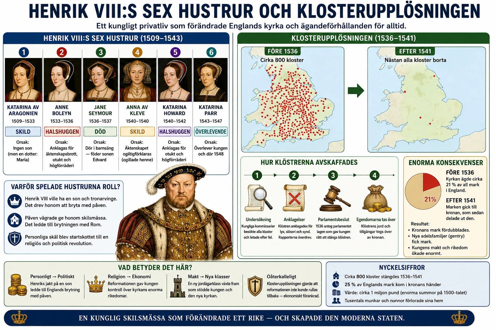

En kung, sex hustrur, en reformation
I §2C läste du att den engelska reformationen började som en politisk fråga: Henrik VIII ville skilja sig från sin första hustru. Men skilsmässan var bara början. Under sina återstående år skulle Henrik VIII gifta sig sex gånger totalt — och varje äktenskap skulle spela en roll i hur den engelska kyrkan förändrades.
Det här är historien om hur en kungs personliga liv och Englands religiösa framtid vävdes samman så tätt att det knappt går att skilja dem åt. Och det är historien om det största egendomsövertagandet i engelsk historia — klosterupplösningen — som gav 25 procent av all mark i England till kronan och skapade en ny elit som skulle prägla landet i århundraden.
Sex hustrur och deras öden
Ett gammalt engelskt minnesramsa lyder: "skild — halshuggen — död — skild — halshuggen — överlevande". Så gick det för Henrik VIII:s hustrur.
Katarina av Aragonien (gift 1509–1533) var Henriks första hustru — en spansk prinsessa, tidigare gift med Henriks äldre bror Arthur som dog ung. Katarina födde en dotter, den framtida Maria I, men flera söner dog i tidig ålder. När Henrik bestämde sig för att äktenskapet var förbannat av Gud (eftersom hon varit hans brors hustru) — och när han samtidigt hade blivit förälskad i Anne Boleyn — bad han påven om annulering. Påven vägrade. Katarinas systerson var kejsar Karl V som just då kontrollerade Rom militärt. Politiskt omöjligt.
Anne Boleyn (gift 1533–1536) var kvinnan för vars skull Henrik bröt med Rom. Hon var uppvuxen vid det franska hovet, kvicktänkt och kultiverad. Hennes tid som drottning blev kort. Hon födde en dotter, den framtida Elizabeth I, men inte den son Henrik desperat behövde. Efter tre år anklagades hon för äktenskapsbrott, incest och landsförräderi. Anklagelserna var sannolikt påhittade. Hon halshöggs 1536 i Tower of London.
Jane Seymour (gift 1536–1537) var kanske Henriks kärlek. Hon födde honom den son han önskat — den framtida Edvard VI — men dog i barnsäng några dagar senare. Henrik sörjde henne resten av livet och begravdes bredvid henne.
Anna av Kleve (gift 1540, äktenskapet upplöst samma år) var ett politiskt äktenskap arrangerat av Thomas Cromwell för att skapa en protestantisk allians. Henrik hade sett hennes porträtt av Hans Holbein och blivit imponerad. När han mötte henne i verkligheten tyckte han inte om henne. Äktenskapet upplöstes efter sex månader. Anna fick behålla en generös inkomst och kallades sedan "kungens syster" — hon överlevde Henrik och dog rik och respekterad 1557.
Katherine Howard (gift 1540–1542) var Anne Boleyns kusin, en ung kvinna vid hovet som Henrik blev förälskad i. Hennes tidigare kärleksförhållanden blev känt, och hon anklagades för äktenskapsbrott under sitt äktenskap med kungen. Hon halshöggs 1542, bara omkring 19 år gammal.
Katherine Parr (gift 1543–1547) var Henriks sista hustru — en bildad protestantisk kvinna som ägnade sig åt de kungliga barnens uppfostran och åt religiös skrivandeverksamhet. Hon överlevde Henrik och gifte om sig efter hans död 1547.
Varför var äktenskapen så avgörande?
För en modern läsare kan det verka underligt att en kungs privatliv skulle kunna orsaka en religiös revolution. Men i det tidigmoderna Europa var dynastisk succession livsviktig. Utan en manlig arvinge riskerade riket att falla i inbördeskrig eller att övertas av utländska makter genom giftermål.
Och äktenskap var inte privatsaker. En kung gifte sig med hela nationens och dynastins framtid i åtanke. Varje äktenskap var ett politiskt kontrakt. Att kunna välja hustru, skilja sig och gifta om sig var därmed en fråga om suveränitet — kunde en engelsk kung verkligen vara suverän om påven i Rom kunde säga nej?
Detta blev en av de djupare orsakerna bakom brytningen med Rom. Det handlade inte bara om Henriks personliga önskan. Det handlade om själva grunden för engelsk suveränitet. Om kungen kunde bestämma över sitt eget rikes kyrka — och därmed också sin egen tronföljdsfråga — då var England verkligen självständigt.
Klosterupplösningen — reformationens ekonomiska revolution
Parallellt med giftermålsdramerna genomförde Henrik VIII den kanske största egendomsöverföringen i engelsk historia: klosterupplösningen (Dissolution of the Monasteries).
I 1530-talets England fanns omkring 800 kloster, priorat och religiösa hus. De ägde tillsammans ungefär en fjärdedel av all mark i England. Många av dem var oerhört rika: klostren i Glastonbury, Fountains och Rievaulx var som små stater i sig själva, med jordbruk, tiondeuppbörd, egna domstolar och stora bibliotek.
När Henrik VIII bröt med Rom 1534 blev klostren ett problem. De var lojala mot påven och representerade en internationell katolsk struktur inne i det engelska riket. Dessutom var de rika — och kronan var det inte.
Lösningen var systematisk. Mellan 1536 och 1541 upplöstes samtliga engelska kloster. Först försvann de mindre (med mindre än 200 pund i årsinkomst) genom Suppression Act 1536. Sedan följde de större genom en serie parlamentsbeslut. Många abbotar och nunnor fick pensioner; några som vägrade lämna över klostren avrättades.
Klostrens egendom övertogs av kronan. Byggnaderna revs ofta ner för att sälja stenen och blyet från taken. Bibliotekens böcker skingrades eller förstördes — mycket medeltida latinsk litteratur försvann för alltid. Många av de klosterruiner som idag är turistattraktioner i England — Tintern Abbey, Fountains Abbey, Whitby Abbey — är resultatet av denna systematiska nedmontering.
En ny elit skapas
Men kronan behöll inte marken. Kronan hade akut behov av pengar för krig mot Skottland och Frankrike, och de nya jordarna såldes systematiskt till adel och gentry.
Detta fick långsiktiga konsekvenser. En ny klass av jordägare växte fram — den så kallade gentry — som köpte klostergods och blev betydande godsherrar. Familjer som Cavendish, Russell och Cecil grundade sitt välstånd på köp av tidigare klosterjord. Deras ättlingar skulle prägla brittisk politik i århundraden — Winston Churchill härstammade från denna klass.
Och här kommer nyckeln till varför reformationen blev omöjlig att vrida tillbaka: dessa nya jordägare hade nu ekonomiska intressen i att behålla reformationen. Om Rom skulle återfå makten och kräva tillbaka klostergodsen skulle den engelska adeln förlora sin nya rikedom. När Maria I försökte återinföra katolicismen på 1550-talet var hon därför tvungen att uttryckligen garantera att klosteregendomen inte skulle återlämnas. Utan den garantin hade adeln aldrig accepterat henne.
Konsekvenser långt bortom England
Klosterupplösningen förändrade det engelska samhället på sätt som få samtida förstod.
Fattigvården kollapsade. Klostren hade varit den viktigaste välgörenhetsorganisationen — de gav mat till fattiga, tog hand om sjuka, tog emot pilgrimer och resenärer. När klostren försvann fanns det i praktiken inget socialt skyddsnät. Detta ledde till Poor Laws som antogs under Elizabeth I:s tid — statens första försök att organisera fattigvård.
Utbildning påverkades. Många kloster hade drivit skolor. Vissa av dessa skolor omorganiserades som grammar schools — ofta med kungen som formell grundare. Kings Grammar Schools finns kvar än idag som en del av engelsk skoltradition.
Kulturarv försvann. Enorma medeltida bibliotek skingrades. Manuskript och illuminerade böcker som hade varit klosternas skatter blev till kartong för handelsvaror eller brändes för värmen.
Landskapet förändrades. Det engelska landskapet med sina karakteristiska klosterruiner — de öppna gotiska bågarna, de raserade väggarna — är i mycket klosterupplösningens synliga arv. Det som William Wordsworth romantiserade i sina dikter på 1800-talet var i grunden Henrik VIII:s förstörelse.
En reformation utan återvändo
Henrik VIII:s brytning med Rom var i teorin reversibel. En framtida kung kunde tänkas återförena England med Rom. Men klosterupplösningen och egendomsöverföringen till adeln gjorde en sådan återkomst i praktiken omöjlig. För många för mycket egendom skulle behöva återlämnas.
Detta är den djupare lärdomen av Henrik VIII:s reformation: stora ekonomiska förändringar är svårare att vrida tillbaka än stora ideologiska. Idéer kan förändras genom predikan och studium. Men mark som en gång bytt ägare vill sällan bytas tillbaka. Klosterupplösningen skapade en klass med hårda intressen i reformationens fortlevnad — och det gjorde den engelska reformationen till en varaktig omvälvning snarare än en tillfällig utflykt.
När Elizabeth I stabiliserade den anglikanska kyrkan 1559 var det inte bara på grund av teologiska överväganden. Det var lika mycket på grund av att en hel klass av markägare — hennes viktigaste politiska stöd — hade allt att vinna på att den nya ordningen bestod.
## Koppling till avsnittet
Denna djupdykning är särskilt relevant för §2C Anglikanismen. Där behandlas Henrik VIII:s brytning med Rom, Act of Supremacy 1534 och framväxten av Church of England. Djupdykningen fördjupar tre aspekter: dynastins roll, klosterupplösningens ekonomiska verkningar och skapandet av en ny elit som gjorde reformationen irreversibel.